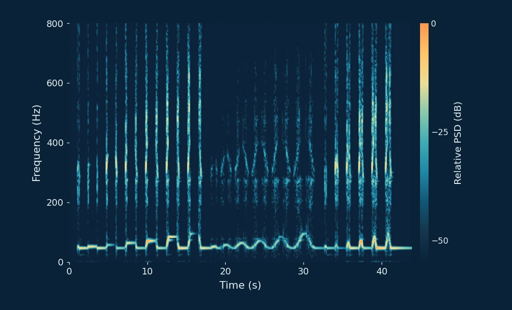
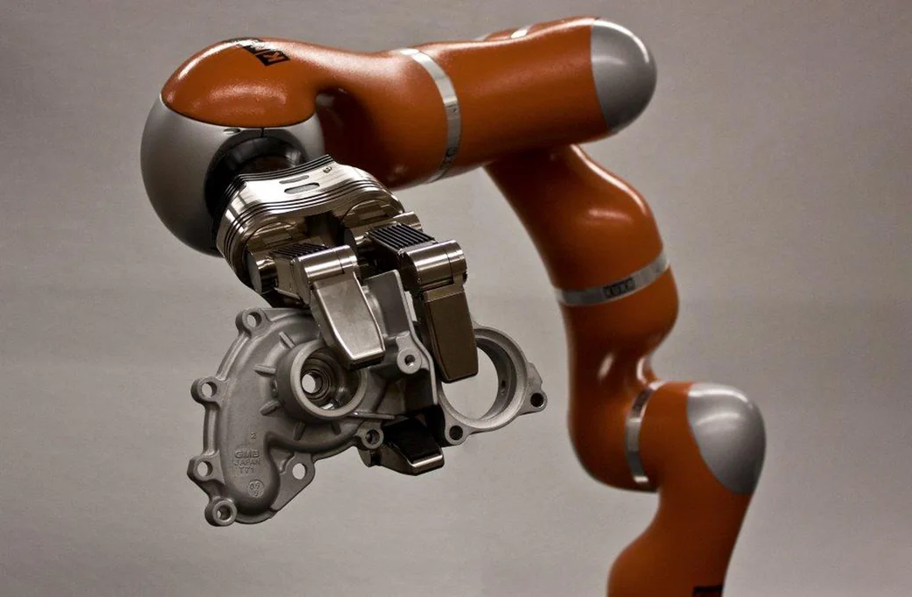

In-situ manufacturing monitoring
We combine optical, thermal, and mechanical measurements to track geometry and detect defects as parts are printed.

Additive manufacturing, process monitoring, and flexible electronics.
Robotics, feedback control, and real-time model updating.
We combine optical, thermal, and mechanical measurements to track geometry and detect defects as parts are printed.

Flexible capacitive sensors and printed electronics measure strain on concrete, composites, and other curved or uneven surfaces.

We update structural models from measured vibrations so their predictions follow changes in the physical system.

We study sampling and state estimation for rapidly changing structures, where a useful prediction must arrive within microseconds or milliseconds.

We investigate how robots can adjust motion and process settings using feedback from the manufacturing operation.
Research inquiries
We use embedded sensors to study how impact and electrical loading affect cells and structural battery composites.